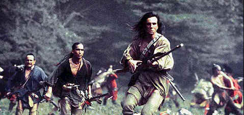
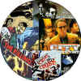

|
Last
of the Mohicans/B+,B
|
|
Fox/1992/117m/WS
2.35 |
This lush adaptation of Last of the Mohicans follows the
screenplay for the 1936 film very closely. Working in a rich
color palette in the hills of North Carolina, the production
value of this Mohicans features extensive attention to period
detail, as well as sumptuous and exciting Widescreen
photography.
The newest treatment
of Hawkeye and his Mohican comrades focuses more closely on the
dynamics of an erupting love between the longhaired woodsman and
the eldest daughter of Colonel Munro, commander of the besieged
Fort William Henry, than the earlier leaner version did.
Nevertheless, director Michael Mann packs the screen with an
abundance of martial action, some of it casually graphic in its
depiction.
 |
| Hawkeye
tot he rescue. ©Fox |
The chase scenes are clearly the most successful. Mann's grasp
of movement through the woods and mountains is nothing short of
spectacular. The cutting of these scenes builds the action to an
accelerating coda, echoed by the strong Scottish strains of the
pounding musical score by Trevor Jones.
Daniel Day Lewis gives
Hawkeye a modern and natural interpretation, which well suits
Mann’s take on the Fennimore Cooper classic hero. Madelaine
Stowe is a lovely Cora Munro and she and Lewis play well
together. The first couple of times I watched Last of the
Mohicans, I questioned the sudden eruption of passion
between Hawkeye and Cora Munro. This time out I could taste the
sensuality between these two appealing actors. Maybe The Last
of the Mohicans gets better with each viewing. I know the
almost two hours was over before I knew it, leaving me
breathless as if I was doing the running.
The traditional villain in
the piece, Magua, is given an outstanding turn by Wes Studi.
Studi seethes venom consistently and practically steals every
scene in which he appears. Indian activist Russell Means handles
the role of Chingachgook with strength and dignity, and although
his lines are limited, his confidence of bearing speaks
powerfully and eloquently.
Oddly, I found the major
battle sequences lacking in the power they should have
generated. The editing did not seem to provide a central point
of view through which the action could expand. The night
photography was marginal, at best, in the theaters, and a number
of these dimly lit scenes did not transfer well onto video.
There’s lots of low light
material in Last of the Mohicans and while it is
delivered smoothly, there is some loss of detail. If ever, this
is a title that cries out for an anamorphic transfer in order to
extract every pixel of detail from the source material. Alas,
this is the best we will have for a while. The film elements are
excellent, but include a few jumps caused by Mann’s reedit of
the film, making this DVD a definitive director’s cut. (An
insert in the DVD box responsibly makes mention of the jumps.)
Color is bright and rich in the day scenes. The sound is truly
outstanding, and while I had difficulty with the clarity of some
of the dialogue in a Manhattan modern movie
"palace," the details of sound are all startlingly
clear on this Dolby Digital 5:1 mix. Bass adds lots of power to
the canon blasts and the pounding score of Trevor Jones sounds
terrific.
|
|
The
Feature
Archive has articles ranging from John
Ford to Blonde
Bimbos, Akira
Kurosawa and Frank
Darabont.

Click on the image above to access The
Heistmasters, a view of the best directors of
the heist.
Check out the Movie
Poster Archive for short bios and
images of Susan Hayward, Kirk Douglas, Katharine
Hepburn and many more. This month's featured star
is Clark
Gable. |
|
Imaging
Science Foundation
The Imaging Science Foundation
promotes proper standards in home theater viewing.
ISF trained technicians offer monitor calibration
services to consumers. The difference in a
properly calibrated monitor can be astounding. Click
on the image to find an ISF member near you. |
|
HOT
LINKS
DVD
Verdict
They
may be judgmental, but that's the point, isn't it.
Lots of DVD reviews plus news and more
The
Home Theater Forum
Looking
for lively and helpful exchanges on home theater,
DVD, movies. Visit this friendly site and get a
hardy welcome. |
|
Home Theater Reference
Reviewing System
When you read a DVD review it's of utmost importance to
know what equipment is being used to evaluate quality.
Click on the projectors to find out more. |
|